Found in the file
Coverage, limits, and exclusions come from your upload.

Upload a declarations page or policy PDF. HomeInvent reads it on this device, matches coverage and limits with what you own, and lets you ask questions in everyday language — with a tap back to the exact page in your file.
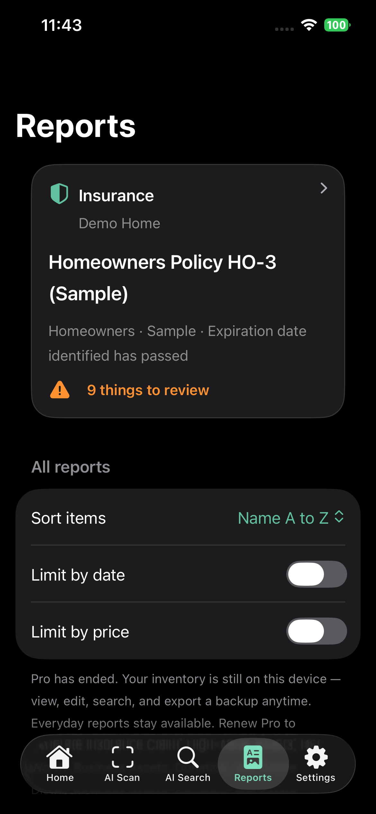
Insurance lives with a specific home — not a global mix of every property. Open Reports, tap Insurance, and you land on the policy attached to that home.
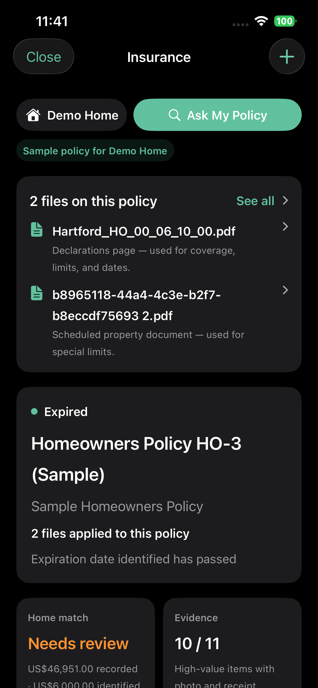
Dashboard — files, status, Home Match, Evidence
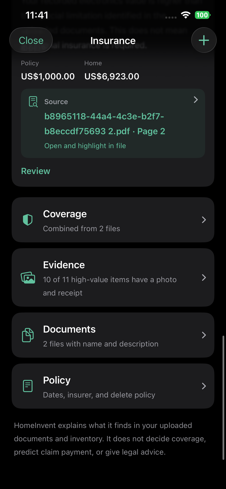
Jump to Coverage, Evidence, Documents, or Policy
Upload PDFs or scans. HomeInvent classifies what it can — declarations, contracts, schedules — and uses those files for Home Match. Ask My Policy stays one tap away.
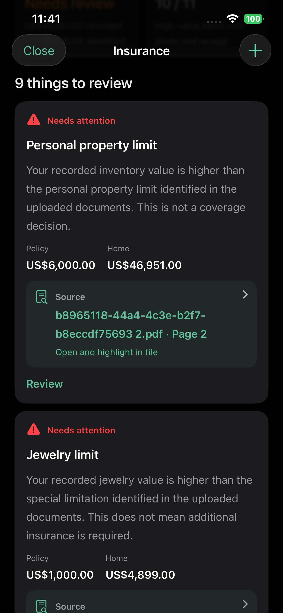
If recorded jewelry or personal property is higher than a limit found in the upload, HomeInvent flags it for review — and links the source page so you can read the wording yourself.
Coverage, Limits, and Exclusions are three views of the same upload. Tap a source chip to open the PDF at the line HomeInvent used.
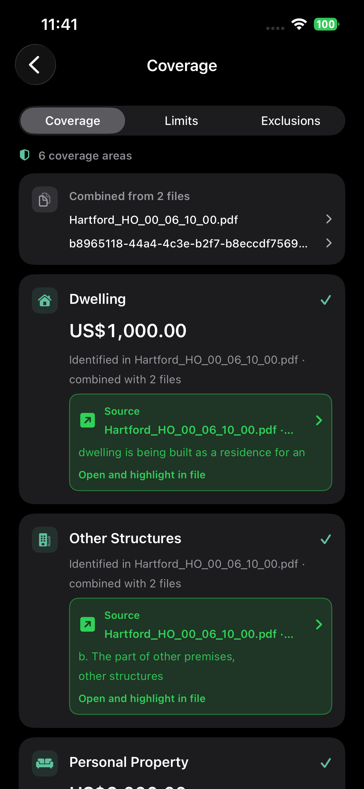
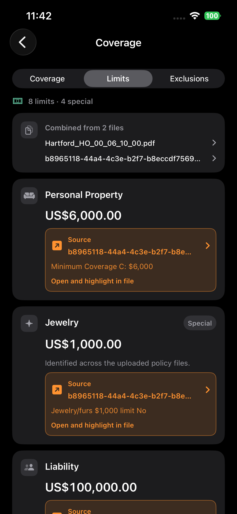
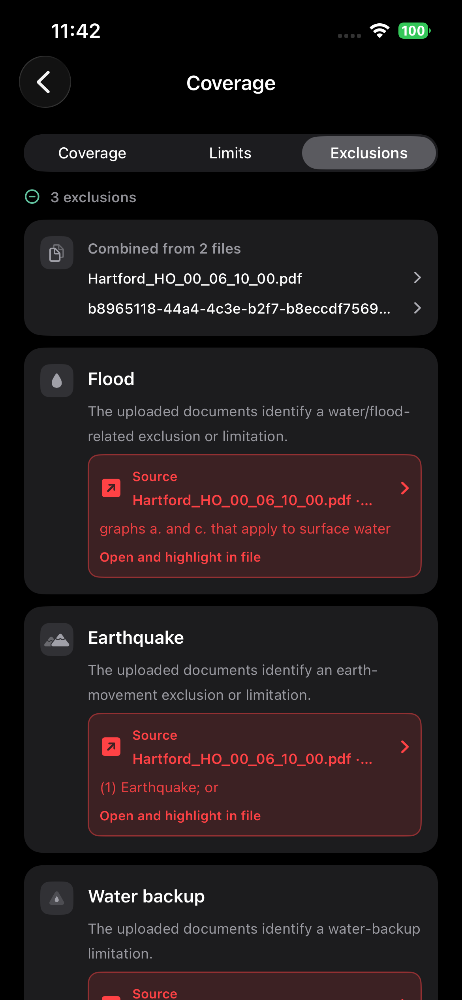
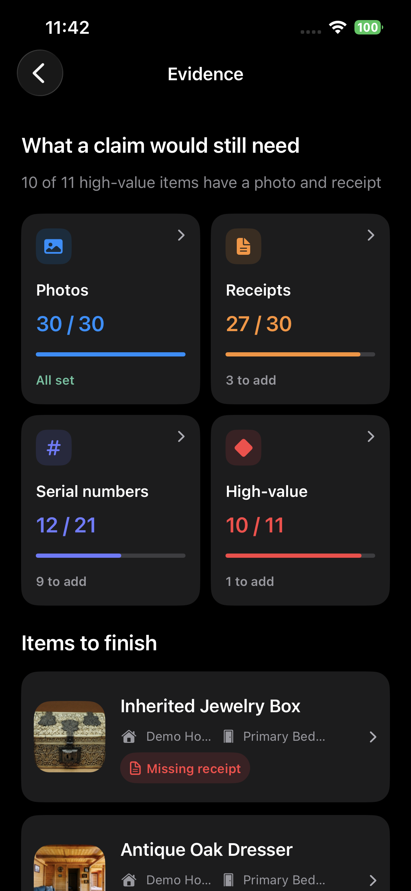
Photos, receipts, serial numbers, and high-value items are counted against this home. Finish the gaps now — before you ever need a claim package.
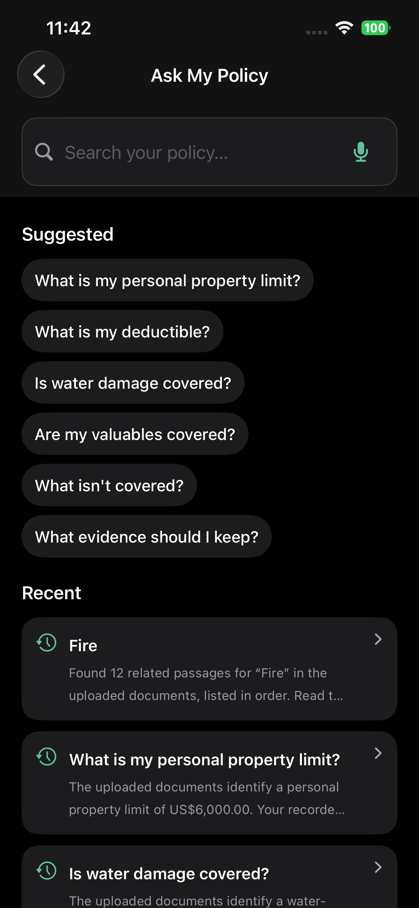
Type or speak a question. HomeInvent searches the uploaded files, answers from what it finds, and lists matching passages — including “Is water damage covered?” and “What is my personal property limit?”
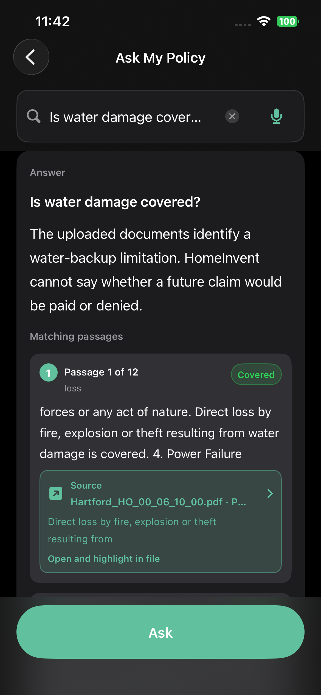
Water damage — passages from the upload, not a yes-or-no verdict
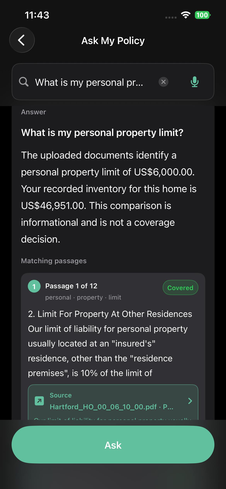
Limits compared with this home’s inventory — informational only
Policy files are stored locally, like photos and receipts. HomeInvent does not send them to a HomeInvent server or a third-party AI service. This version does not sync insurance documents with iCloud.
Coverage, limits, and exclusions come from your upload.
No coverage guarantee, claim prediction, or legal opinion.
Confirm anything important with the company that wrote the policy.
Open Reports → Insurance in HomeInvent. Upload a file. Ask a question. Export a backup anytime from Privacy & Data.
Download on the App Store →